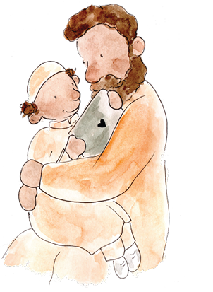
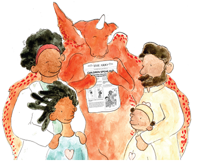

Preparing to read and CHAT
When preparing to read with children, please remember:
-
The story can be read with one or more children.
4 -
An adult or an older child can read page by page.
-
It is best to read slowly and tell the story with a bit of drama.
-
The adults and children want to see the pictures, so sit close, but not too close together, to allow for proper physical distancing, and arrange the seating so the children can easily see the pictures.
-
Try to sit in a quiet space where you can avoid interruptions.
-
When reading with a group of children, adults are responsible to ensure that all of the children have the chance to safely share their thoughts and feelings during the CHATs.
-
The CHATs are good opportunities for adults to teach children effective ways to manage their fears and stressful situations.
It is time to CHAT, when you see
Everyone who will read the storybook and chat with the children are referred to as “ADULTS” in this guide. They include:
-
Parents
-
Grandparents
-
Caregivers
-
Teachers
-
Youth leaders
Adults know the special dynamics of their cultures, environments and social norms. It is recommended that the CHATs are honest discussions that include positive actions children can take that are realistic and fit into their unique real-life experiences. CHATs and actions differ for children living in cities or rural areas, from different continents, living in their homes or in a camp in another country, and vary depending on economic, social, religious and cultural values.
The CHATS vary depending on the relationship of the adults to the children. In addition to informing children about COVID-19, parents reading the storybook with their children, direct their CHATs to include actions showing how they as parents will protect the children and how the children can participate in protecting the family. When teachers or youth leaders read with the children, they can direct their CHATs and actions towards showing how they will participate in protecting the children and how the children can be responsible and protect their friends and classmates.
In each CHAT, adults have conversations with children about different messages.
The CHATS can go in two directions...
5

Sharing information:
First, adults need to be well informed so that during a CHAT they share accurate information with children. Remember, children have some awareness about the coronavirus since they are keen listeners and at every age hear adults talking and feel their emotional cues. Adults can answer children’s questions honestly to ensure that they have a clear understanding of the coronavirus and its risks. The answers can be scary, so adults can use the CHATs to reassure children and explain the actions they as adults and the children can take to keep safe. For children feeling safe not only comes from knowing adults are there to care for them, feeling safe also comes from learning ways they can feel empowered or strong enough to be heroes and take actions to protect themselves and those they love.
The second direction for CHATs encourages adults to take the time to listen and hear what children feel and think about today’s changed life.
Hearing children:
To encourage children to chat freely adults will:
-
Sincerely take the time to show their interest in what the children think and feel.
-
Listen and be patient as children talk and hear what children say and feel.
-
Talk with the children. Do not talk at them or to them. Talk with them.
-
Ask questions to show interest and understand the children’s thoughts and feelings.
-
Reflect on what the children say to have two-way discussions.
6 -
Educate children and honestly reassure them about the present situation.
-
Offer realistic protection to children.
-
Offer support and love to the children.
-
In a group reading, give equal opportunity for children to speak when they want.
-
Encourage children to listen and respond to each other in respectful ways.

Example of a CHAT that HEARs the child:
A Dad and his 10 years old son, Salem are reading the storybook together.
At CHAT 2 Dad wants to talk with Salem about his feelings regarding the coronavirus.
Dad: In the story, Sara shares that she is scared of the virus. What about you? What about the coronavirus scares you?
Salem: I am afraid to die. Some nights it’s hard to fall asleep. I worry I won’t wake up.
7Dad: I am sorry you worry at night. I didn’t know you felt like this. What makes you worry that you won’t wake up?
Salem: I heard some children died from Corona. I don’t know why they died but I heard someone say this. If I get the virus will I die?
Honest response to fact.
Dad: A very small number of children around the world got very sick from the virus and died. It is very rare. You are healthy and most of these children had other health problems in addition to the virus.
Salem: So, I won’t die if I get the virus?
Dad: It is very unlikely that you will die if you get the virus. Most often children do not get seriously ill and die.
Salem: That’s good to know.
Talk about feelings and protection.
Dad: I hope we can talk when you feel worried. When you worry at night, let’s agree on what we can do to help you feel safe and sleep. What can we do?
Salem’s Dad listened and encouraged Salem to share his feelings. He responded with kindness, support and accurate information. He offered to help Salem to find ways to feel safe at night. Salem responded positively and was encouraged to continue to CHAT.
Example of a CHAT where a child is not heard:
Let’s imagine if Salem’s Dad said the following:
Dad: In the story, Sara shares that she is scared of the virus.
What about you? What about the coronavirus scares you?
Salem: I am afraid to die. Some nights it’s hard to fall asleep. I worry I won’t wake up.
Unfortunately, Salem’s Dad wants to quickly reassure Salem that he won’t die in his sleep.
Dad: Don’t worry, you will wake up.
Salem: Ok.
Salem ends the CHAT.
8The CHAT was quickly over. Clearly, this is not what we want. Salem ended the CHAT because, his feelings were turned off. Salem’s Dad did not hear his fear. His Dad wanted him to know he was safe and might have felt unsure how to discuss a difficult topic, so he gave Salem a quick answer. If Salem’s Dad wants to understand how Salem feels and encourage Salem to feel it is okay to share his feelings, his Dad needs to listen and respond to his feelings as he did in the first example.
Focus on the key messages
Whether we are chatting with one child or a group of children, in each CHAT adults will focus on essential messages and keep the CHATs brief to avoid losing the intensity of reading the story. Asking an open question like, “What makes you sad?” can be particularly challenging. Children could answer by talking about the coronavirus or about a bully at school. Adults keep each CHAT focused only on the message of that CHAT. Adults ask questions specific to that CHAT like, “What makes you sad about the coronavirus?” Children share. Adults listen and respond and share the message and lessons of each CHAT. Adults can offer to CHAT about other issues after reading the story book.
Length of CHAT
We want to give opportunities for all children to share their ideas and feelings. However, some children like to talk, some rarely want to talk and some talk too much. Adults will need to control the length of each CHAT. If a child is talking a lot, adults listen and remind them we want to go back to the story and arrange to talk more after they finish reading the story. Some children do not feel comfortable to speak. Best not to push them. This is story time and children can listen and learn and not everyone needs to talk.
Unique CHATS
CHATs vary by cultures and the personalities and the relationship of the adults and children. A CHAT with a teacher will be different than a CHAT with a parent.
However, the purpose of the CHATS are always the same. The CHAT is a safe place for children to share their thoughts and feelings, to learn facts about the coronavirus, and understand how children can take responsible action to protect themselves and others.
9THE ARIO: Information for Adults
THE ARIO is a newspaper that offers adults advice about how to CHAT with children about how to cope with COVID-19. Please read them before you CHAT to learn from their advice and then read them again after as a reminder.
